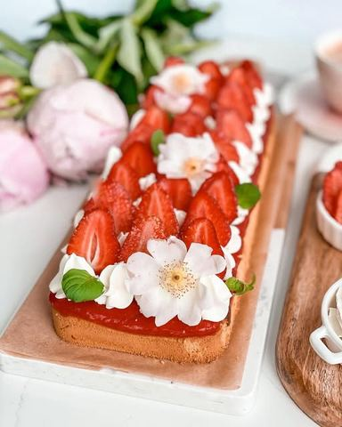

Moja beleška
SačuvanoSastojci
- Biskvit
- Jagoda sloj
- Krem
- Još
Priprema
Pre početka šporet upalite na 170C kako bi se rerna lepo i ravnomerno zagrejala. Prvo ćete pripremiti završni krem. Na 100 gr iseckane čokolade prelijte vrelu slatku pavlaku, sačekajte minut, pa promešajte, a onda narendajte malo štapića vanile sa savršenu aromu. Ostavite u zamrzivaču nekih sat vremena. Da bi na kraju kada se biskvit ohladi umutili u savršen krem i premazali preko gotovog kolača. Za pripremu biskvita je potrebno razdvojiti belanca od zumanaca. Belanca mutiti na najjačoj brzini oko minut, pa smanjiti brzinu i dodavati šećer postepeno muteći. Odvojiti sa strane. Žumanca umutiti ručno sa kasicicom vanil šećera, pa to dvoje lagano umešati žicom za mućenje i dodati ugrejanu slatku pavlaku muteći lagano. Na kraju prosejano brašno sa pzp umešati postepeno kako ne bi ostale grudvice. U kalup (moj je dimenzija 28*10) uliti malo više od pola smese, a u ostatak dodati punu kašiku kakaa, umešati lepo i preliti preko prvog sloja. Peći tačno 20 minuta bez otvaranja rerne. (Ovo je prilagodjeno dimenzijama pleha) Oprane jagode preliti kašikom soka od limuna i vanilin šećerom, malo ih prokuvati i na kraju štapnim mikserom izblendati. Na nižoj temperaturi im dodati dve kašike gustina umućene sa dve kašike vode i brzo mešati, skloniti sa vatre pa preliti preko vrelog biskvita. Ohladiti lepo pa kremkati filom od bele čokolade i dodati sveže jagode.
Originalni opis sa Instagrama
Sočni kolač sa jagodama 🍓🍓🍓 Sada kada su pijace preplovljene domaćim slatkim 🍓 da ne posustanem sa receptima na tu temu ☺️ A i navikla sam vas obradujem dobrim receptom pred vikend da uživanje i druženje bude još sladje 🥰 Vanila kakao biskvit, jagoda sloj, pa krema od bele čokolade, sočno, moćno, savršenooo 🥰 Biskvit: •3 jaja (odvojiti belaca od žumanaca) •70 gr šećera •kašičica vanil šećera •kašičica praška za pecivo •40 ml slatke pavlake •70 gr brašna •1 kašika kakaa Jagoda sloj: •250 gr jagoda •1 vanilin šećer •kašika soka od limuna •2 kašike gustina promešate u dve kašike vode Krem: •100 gr bele čokolade •100 ml slatke pavlake •vanila štapić (malo narendane kore) ili kašičica arome vanile Još: •150 gr svežih jagoda Pre početka šporet upalite na 170C kako bi se rerna lepo i ravnomerno zagrejala. Prvo ćete pripremiti završni krem. Na 100 gr iseckane čokolade prelijte vrelu slatku pavlaku, sačekajte minut, pa promešajte, a onda narendajte malo štapića vanile sa savršenu aromu. Ostavite u zamrzivaču nekih sat vremena. Da bi na kraju kada se biskvit ohladi umutili u savršen krem i premazali preko gotovog kolača. Za pripremu biskvita je potrebno razdvojiti belanca od zumanaca. Belanca mutiti na najjačoj brzini oko minut, pa smanjiti brzinu i dodavati šećer postepeno muteći. Odvojiti sa strane. Žumanca umutiti ručno sa kasicicom vanil šećera, pa to dvoje lagano umešati žicom za mućenje i dodati ugrejanu slatku pavlaku muteći lagano. Na kraju prosejano brašno sa pzp umešati postepeno kako ne bi ostale grudvice. U kalup (moj je dimenzija 28*10) uliti malo više od pola smese, a u ostatak dodati punu kašiku kakaa, umešati lepo i preliti preko prvog sloja. Peći tačno 20 minuta bez otvaranja rerne. (Ovo je prilagodjeno dimenzijama pleha) Oprane jagode preliti kašikom soka od limuna i vanilin šećerom, malo ih prokuvati i na kraju štapnim mikserom izblendati. Na nižoj temperaturi im dodati dve kašike gustina umućene sa dve kašike vode i brzo mešati, skloniti sa vatre pa preliti preko vrelog biskvita. Ohladiti lepo pa kremkati filom od bele čokolade i dodati sveže jagode. Uživajte u vikendu 💓 • • • #sočnikolači #idejezadezert #jagodakolač #slatkisi